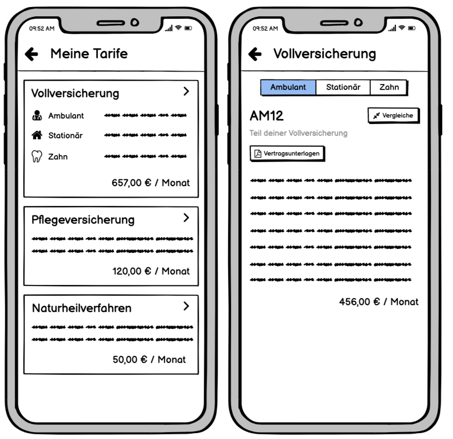

Tariff information
One feature that one of our customers would like to offer its insurants (and which, according to its own market research, is desired by the insurants) is to be able to view the personal tariffs and, if necessary, compare and change them. In the later user tests, we also found out that the users consider this feature to be positive, since they then do not have to 'search through the paper documents' to find out, for example, how much subsidy they get for glasses.
Since the tariffs are rather confusing at first glance, I have displayed the tariffs in flow charts and broken them down in order to better assess how they could be presented visually.


Based on this, I created wireframes, which were then tested with the users in the subsequent user tests.